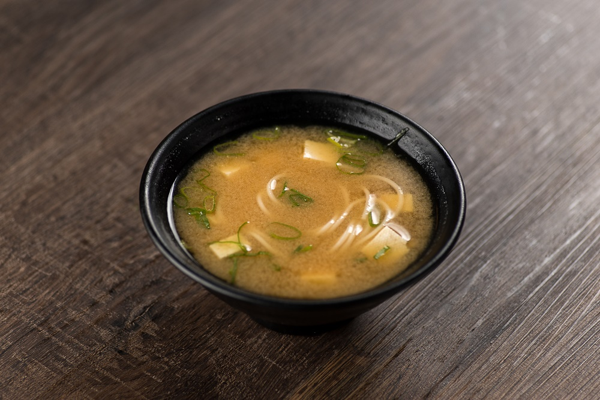
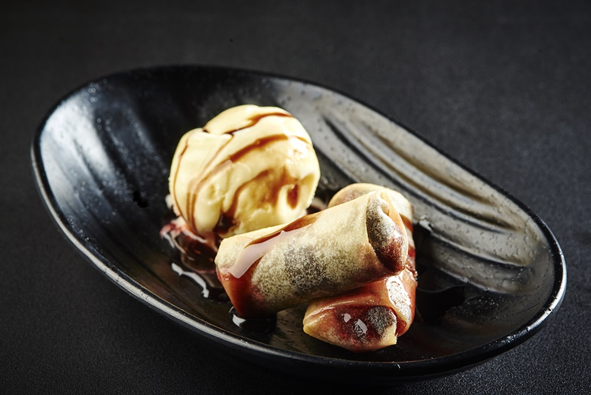

Conheça um pouco sobre a culinária do Japão
Sushi
Esta típica comida japonesa é um bolinho de arroz enrolado com uma alga. O sushi traz diferentes ingredientes em seu interior, entre eles frutos do mar, peixe e vegetais.
Sashimi

O prato traz tiras finas de peixe cru, geralmente salmão, atum e outros peixes. Não é consumido com arroz, mas pode ser acompanhado de alga, molho shoyu e wasabi.
Missoshiru
Servida quente, antes do prato principal ou no café da manhã, a missoshiru é uma sopa feita à base de pasta de soja, dashi (caldo de peixe) e tofu. Algumas vezes pode conter legumes. A receita é servida em uma cumbuca, conhecida como ochawan.
Harumaki
Também conhecido como rolinho primavera, o harumaki é uma massa leve feita à base de farinha de trigo e recheada com ingredientes variados.
Lámen
Engane-se quem pensa que lámen é um macarrão instantâneo. Feito à base de farinha, água e sal, a massa é servida numa tigela acompanhada de ovo, frango, alga, peixes brancos e molho.
Niguiri
Esta iguaria cheia de sabor é composta por uma porção pequena de arroz coberta por pedaços de peixes e outros frutos do mar.
Uramaki
Este é o famoso sushi invertido. Ou seja, o arroz (gohan) fica por fora e a alga segura firmemente o recheio que pode ser cru ou grelhado.
Yakissoba
Muito apreciado pelos conhecedores da culinária oriental, yakissoba (junção de yaki (assar) e soba (macarrão)) é um prato composto por macarrão refogado com legumes e carnes, que podem ser de boi, frango e porco.